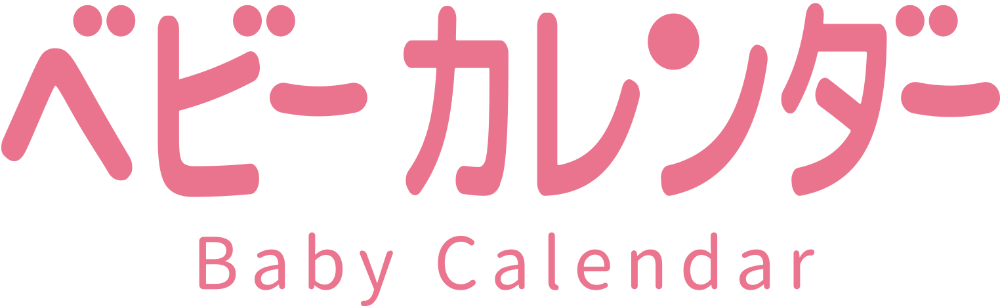

-
Company introduction
- 応募資格
- 勤務地・時間
- 給与
- 休日・休暇
- その他
会社名
所在地(本社)
本社:〒151-0053東京都渋谷区代々木1-38-2 ミヤタビルディング10F
TEL:03-6631-3600
FAX:03-6631-3601
設立
1991年4月
従業員数
71名
代表取締役
安田 啓司
株式会社福武書店（現ベネッセコーポレーション）入社
女性向けサイト「ウィメンズパーク」の立ち上げ、
妊娠出産育児雑誌「たまひよ」生活情報誌「サンキュ！」などの事業責任者を担当。
企業理念
赤ちゃんの笑顔でいっぱいに -A Sea of Smiling Babies-
採用情報
〈歓迎〉HTML, Javascriptの知識がある方、Cordova, Monacaアプリ開発経験者
東京本社（東京都渋谷区代々木1-38-2 ミヤタビルディング10F）
または
大阪支社（大阪市中央区西心斎橋1-5-5 アーバンBLD心斎橋8階）
または
三島開発センター （静岡県三島市大社町18-7 小林ビル2F）
9:30 ～ 18:30（実働8時間）
※在宅勤務可
※フレックスタイム制度あり
経験・能力を考慮し決定します (給与改定年2回)
年間休日 125日
週休2日制（土・日）
祝日
年末年始休暇
会社が定める日（夏季休暇など）
有給休暇
特別休暇（慶弔休暇など）
社会保険完備
MVP表彰制度
資格取得支援・各種セミナー等への参加支援制度
リモートランチ会・飲み会費用補助制度
社内お菓子食べ放題